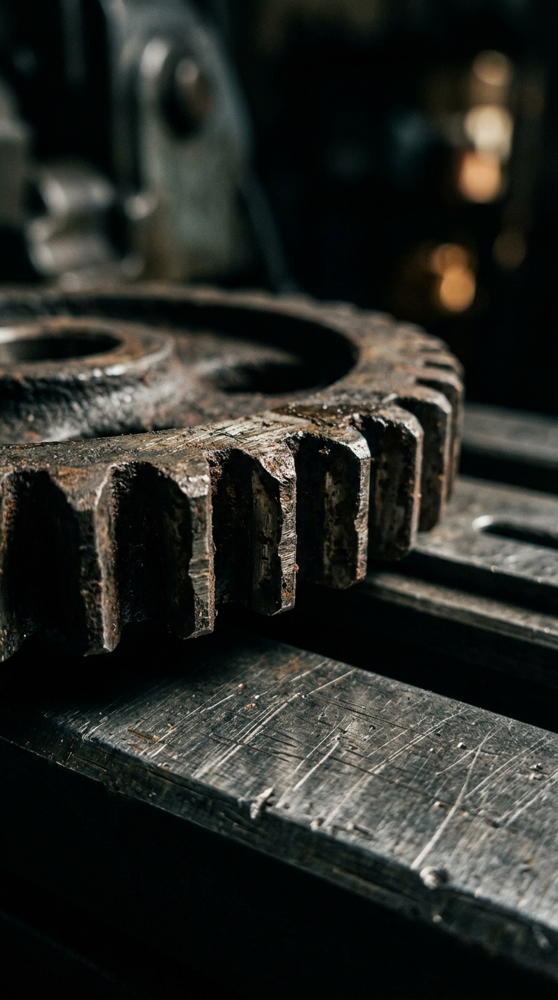

Radical Self-Reliance
00:04 - 00:10
"No one’s coming to save you. No mentor, no investor, no viral post. The only person who can move your life forward is you."
Mineral & Material Foundation
| Domain: | Ferrous Metallurgy (Density: 7,200 kg/m³) |
| Material: | Weathered Cast Iron & Brushed Industrial Steel |
| Acoustic Cue: | Low-frequency metallic clang with dense 120Hz damping |
| Symbolic Role: | Uncompromising agency, immovable solitude, momentum |
Macro Cinematography & Physics
| Optics: | 35mm Anamorphic Macro Prime, T1.5 shallow DOF |
| Focus Rig: | Background Defocus Isolation (The Target Spotlight) |
| Container: | Polarizing Bevel with Double-State Cast Shadow |
Veo 3.1 Image-to-Video Directive
Cinematic 9:16 vertical macro shot animating the provided input image. Heavy cast iron gear begins isolated rotational turn on brushed steel. Background deeply defocused, high-angle chiaroscuro spotlight, subtle Kodak 5219 film grain, 24fps.